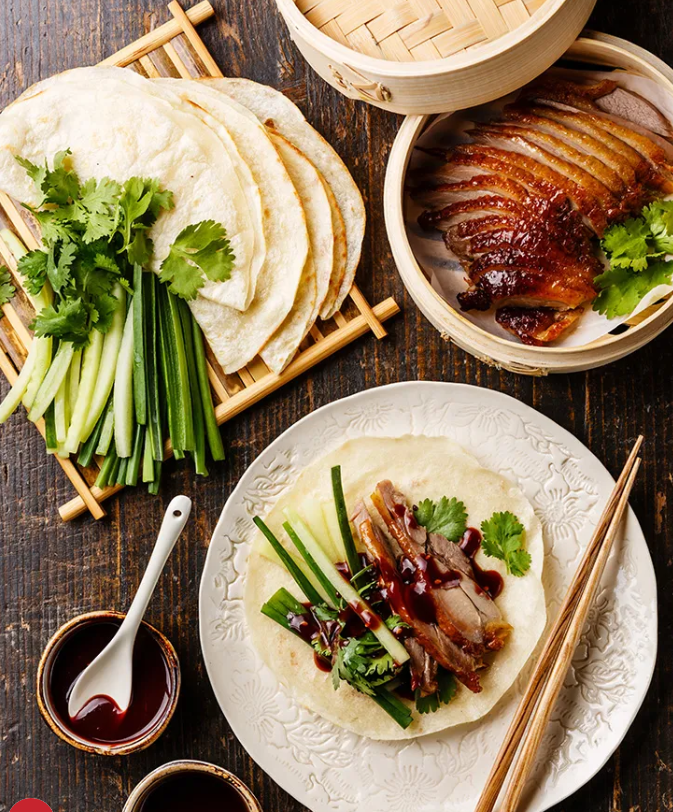

Peking Duck Dish |
Back to Home | |
|  | ||
|
Ingredients: 14 oz soft tofu (1 block) 1 tbsp oil 0.25 lb ground pork 1.5 tbsp doubanjiang, chopped 2 cloves garlic, minced 2 tsp ginger, grated or finely chopped 1 cup chicken stock (sodium-free/unsalted preferred) 1 tbsp soy sauce 1 tbsp cornstarch, whisked into 2 tbsp water 0.5 tsp ground Sichuan pepper (or to taste) Green onions, thinly sliced (for finishing) Cooking Instructions: Step1: Cut tofu into small cubes. Boil water with a pinch of salt, simmer, add tofu, cook for 2 minutes, then soak in salted water. Step2: Heat oil in a wok over medium heat. Cook pork until fat renders and pork is cooked. Lower heat, add doubanjiang, stir until bright red. Step3: Stir in garlic and ginger, cook for 1 minute. Add stock and soy sauce, bring to a simmer. Step4: Drain tofu, add to wok, gently push it around. Stir in cornstarch slurry, simmer until sauce is thick and glossy (about 1 minute). Step5 Turn off haet,transfer tofu with sauce to a serving dish. Sprinkle ground Sichuan peppercorn and sliced green onions. Enjoy your flavorful mapo tofu! |